Gallery
A visual journey through the Kingdom of Bhutan
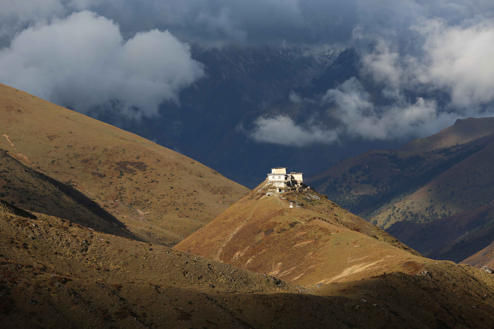
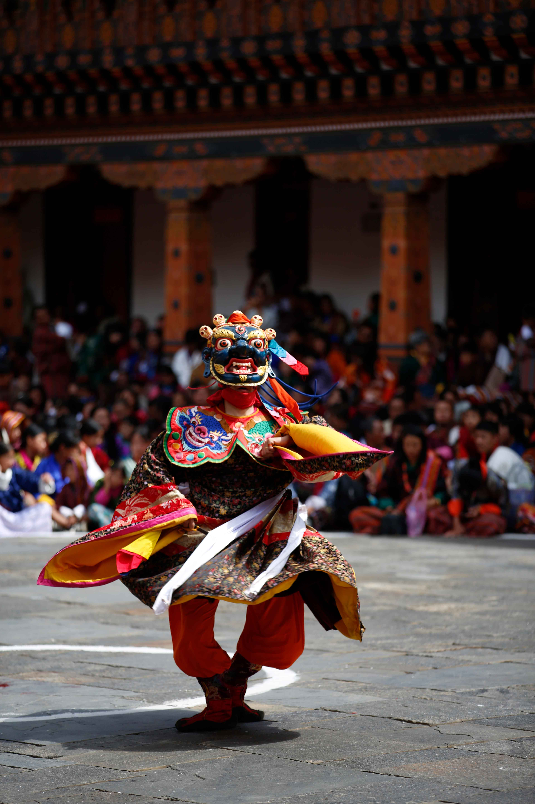

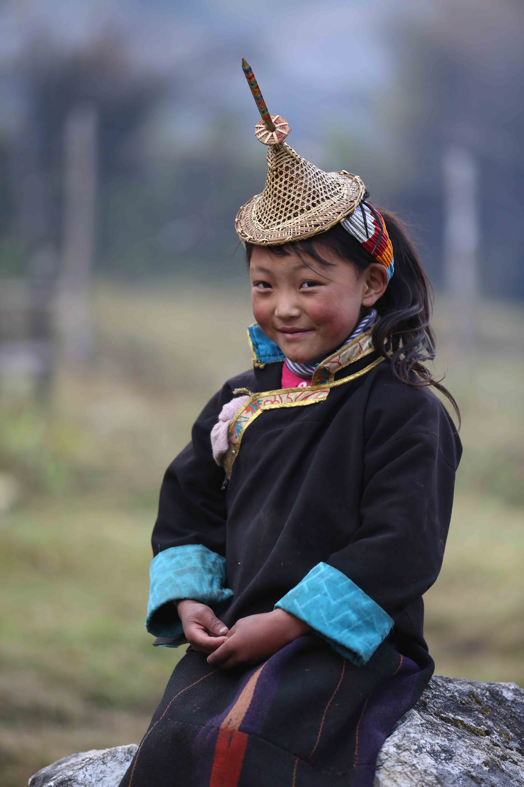

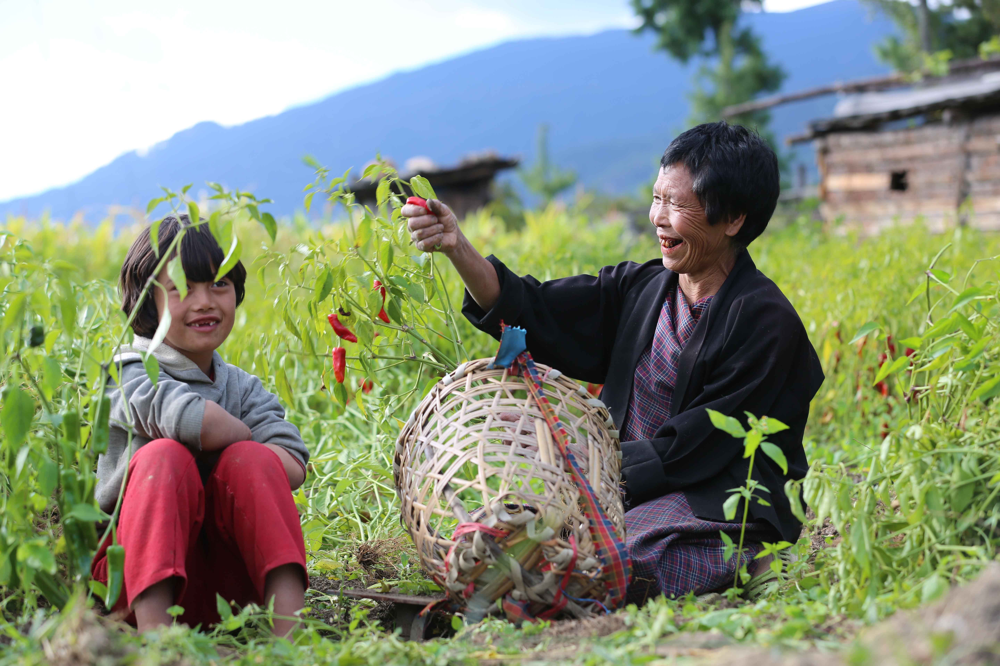
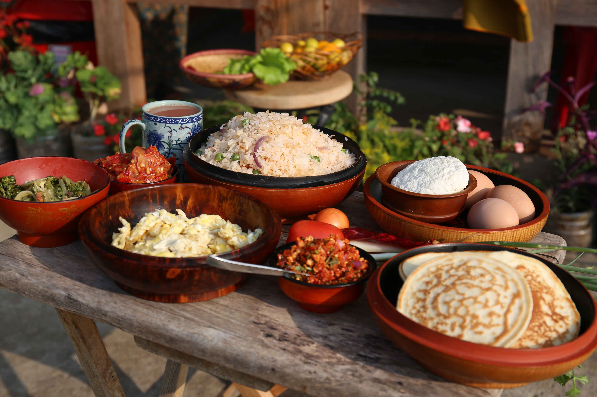
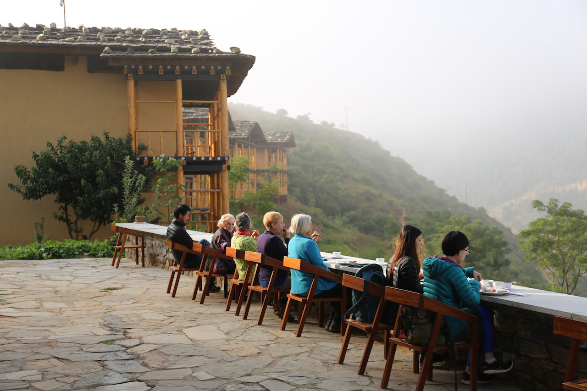
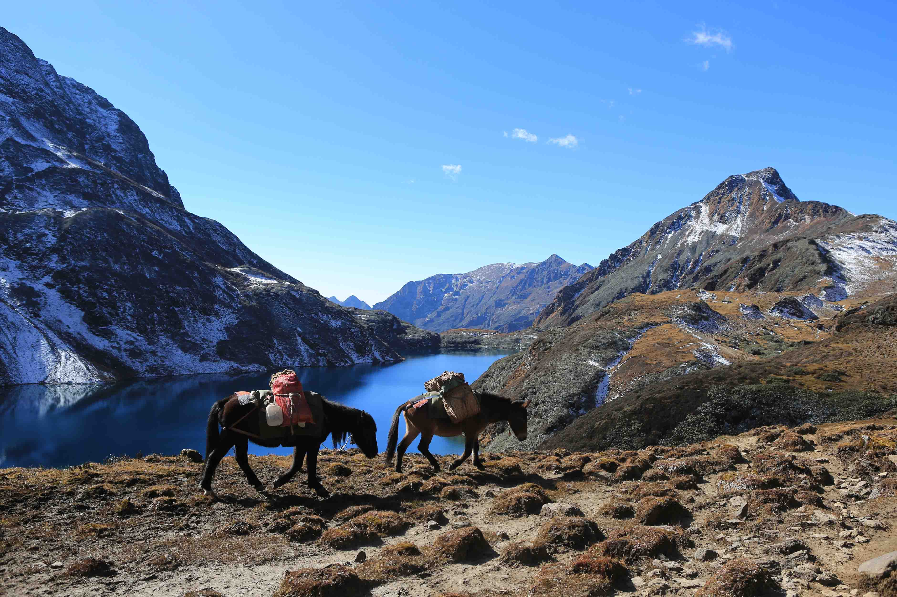
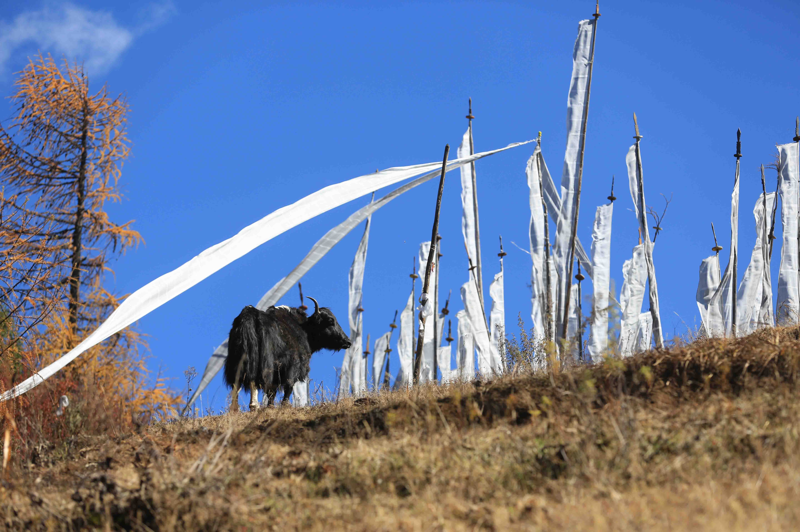
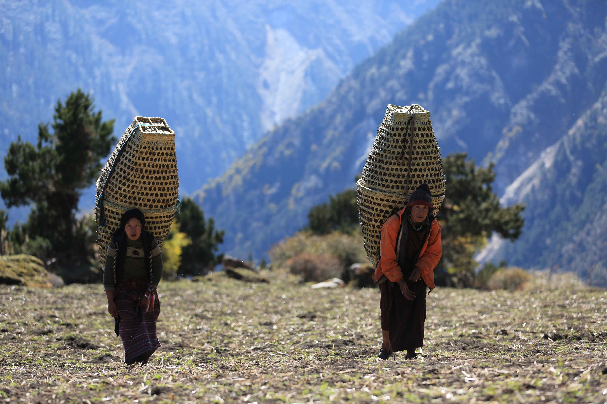
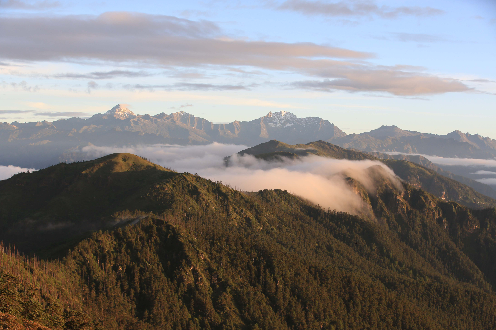

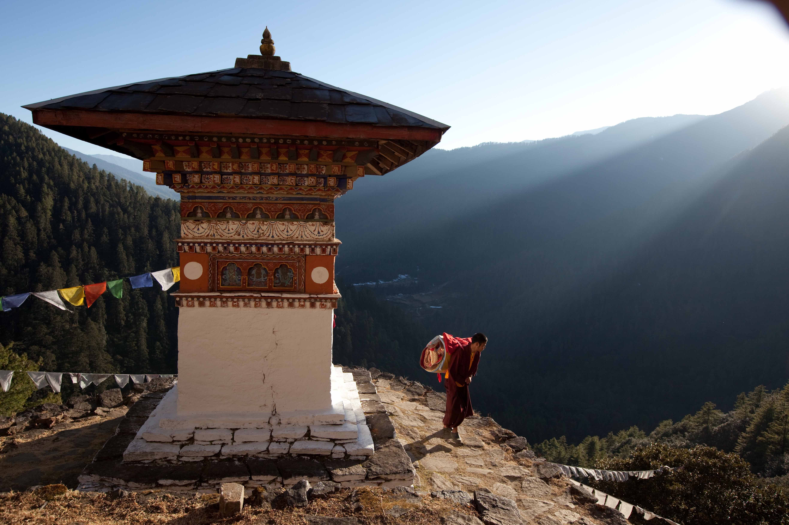
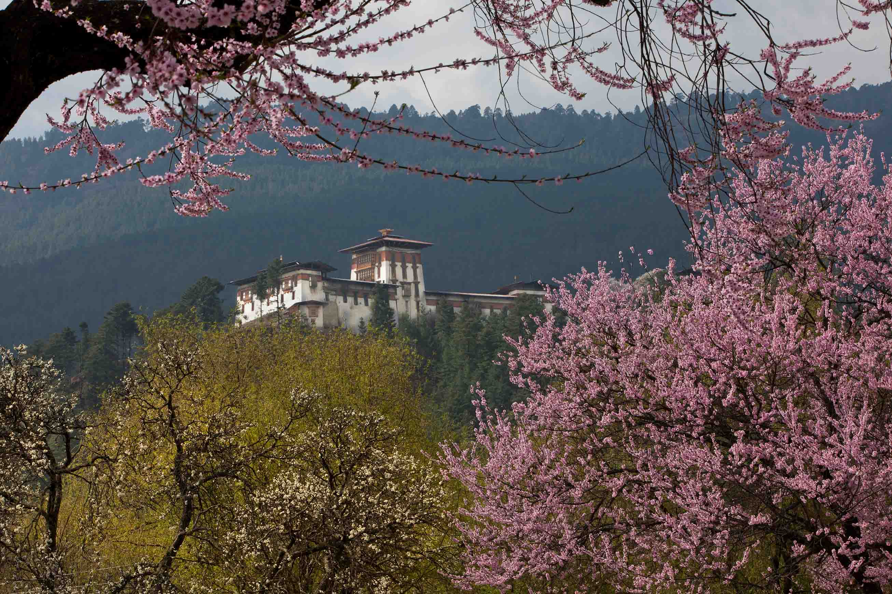
Ready to See It in Person?
Every photograph tells the story of a journey waiting for you. Let us craft your own Bhutan adventure.
Explore Our Trips